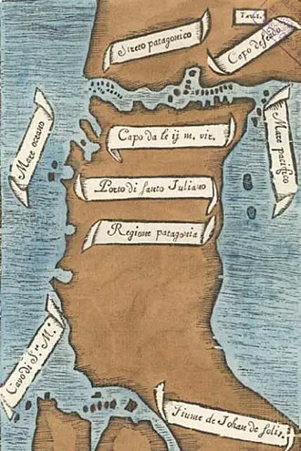

Magallanes cruza el estrecho

Hernando de Magallanes, navegante portugués al servicio de la Corona española, partió de Sanlúcar de Barrameda en septiembre de 1519 con cinco naves. Buscaba llegar a las islas de las especias, en Asia, navegando hacia el oeste. Tras recorrer la costa atlántica de América del Sur, sofocar un motín y perder una nave, el 21 de octubre de 1520 entró en el estrecho que hoy lleva su nombre.
La travesía, entre canales, vientos fuertes y corrientes, duró más de un mes. En ella, la nave San Antonio desertó y regresó a España. El 28 de noviembre de 1520, las tres naves restantes salieron al océano que Magallanes llamó Pacífico. Los navegantes vieron fuegos en la costa sur, de donde provendría el nombre de Tierra del Fuego.
Magallanes murió en 1521 en Filipinas, y Juan Sebastián Elcano completó en 1522 la primera vuelta al mundo. La historiografía tradicional habla de "descubrimiento", pero las costas del Estrecho de Magallanes estaban habitadas por pueblos como el kawésqar, el selk'nam y el aónikenk. Siglos después, Chile tomó posesión del estrecho (Fuerte Bulnes y el Estrecho de Magallanes).
Versión para niños
En 1520, el navegante Hernando de Magallanes buscaba un paso por mar entre el océano Atlántico y el océano que hoy llamamos Pacífico. Viajaba al servicio del rey de España con varios barcos. Después de muchos meses, encontró un canal largo y peligroso en el extremo sur de América. Tardó más de un mes en cruzarlo. Ese paso hoy se llama Estrecho de Magallanes. Sus orillas no estaban vacías: allí vivían pueblos como los kawésqar y los selk'nam.
Para maestros
Nivel sugerido: 5° básico
Objetivo: Explicar el viaje de Magallanes como parte de la expansión europea y reconocer que el territorio que recorrió ya estaba habitado.
Preguntas para la clase:
- ¿Por qué los europeos buscaban un paso entre el Atlántico y el Pacífico?
- ¿Qué dificultades enfrentaron los navegantes en el estrecho?
- ¿Es correcto decir que Magallanes "descubrió" el estrecho? ¿Por qué?
Actividad (20–30 min): En un planisferio, los estudiantes trazan la ruta de la expedición de Magallanes y Elcano (1519–1522) y marcan sus principales etapas. Luego escriben una breve entrada de diario sobre el cruce del estrecho, imaginando la mirada de un marinero o la de un kawésqar que ve pasar las naves.
Fuentes sugeridas: Memoria Chilena; Biblioteca Nacional Digital; Museo Histórico Nacional.
Objetivos de Aprendizaje (Currículum Nacional)
- 1° básico · HI01 OA 07 Conocer sobre la vida de hombres y mujeres que han contribuido a la sociedad chilena … los fundadores de las ciudades, los exploradores
- 5° básico · HI05 OA 01 Explicar los viajes de descubrimiento de Cristóbal Colón, de Hernando de Magallanes y de algún otro explorador, considerando sus objetivos, las rutas recorridas
- 8° básico · HI08 OA 07 Analizar y evaluar el impacto de la conquista de América en la cultura europea, considerando la ampliación del mundo conocido
Personajes
Revisión humana pendiente. Cómo se revisa · Reportar un error
Cómo citar: Historia de Chile. (2026). Magallanes cruza el estrecho. En Historia de Chile: atlas y línea de tiempo. https://moises-salgado.github.io/historia-de-chile/momento/magallanes-cruza-el-estrecho.html